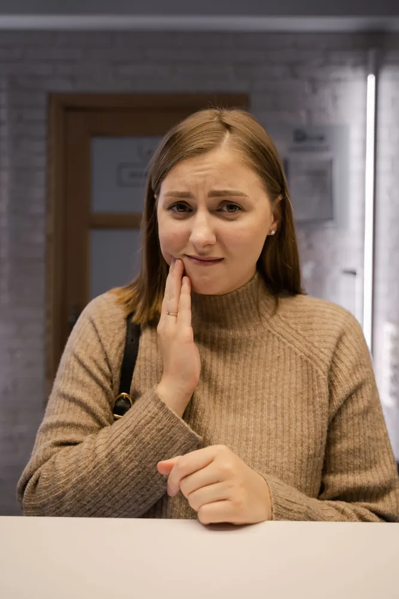

Clínica odontológica familiar · Porto Alegre
Seu cuidado odontológico e o da sua família, em um só lugar.
Do primeiro dentinho à prótese dos avós, com hora marcada, perto de casa e pelos convênios odontológicos que você já tem.
- 12 convênios aceitos
- 3 dentistas
- No bairro desde 2009
Foto ilustrativa de Porto Alegre
Convênios aceitos
Atendemos pelo seu plano
Digite o nome do seu convênio. Se ele estiver na lista, você já vê o que costuma ser coberto; se não estiver, a recepção confere pelo WhatsApp.
A cobertura depende do seu plano. Cada operadora tem regras próprias de carência e de autorização prévia. Leve a carteirinha e um documento com foto: a recepção confere tudo antes de começar e avisa se algum procedimento fica fora do plano.
Convênios com nomes fictícios. Demonstração: no site real, a lista é mantida pela recepção e pode ser ligada à agenda do consultório (Clinicorp, Simples Dental…).

Urgência
Está com dor de dente?
Fale com a recepção agora. Dor, inchaço, dente quebrado ou restauração que caiu têm prioridade na agenda: sempre que possível, encaixamos no mesmo dia, dentro do horário de atendimento.
Fora do horário, deixe a mensagem no WhatsApp. A equipe responde assim que a clínica abre.
Procure um pronto-socorro se houver inchaço que dificulta respirar ou engolir, febre alta ou sangramento que não para.
Horário de atendimento
Com hora marcada
Verificando…
Tratamentos
O que a sua família precisa, do básico ao completo
Não sabe qual tratamento precisa? Comece pela avaliação.

Para crianças
Um sorriso saudável começa desde cedo
A primeira consulta pode ser quando nasce o primeiro dente, ou até 1 ano de idade. As consultas das crianças são marcadas com mais tempo, e um responsável acompanha sempre.
- FlúorAplicação no consultório, quando indicada pela avaliação.
- SelanteProteção dos sulcos dos molares permanentes, onde a cárie começa com facilidade.
- AcompanhamentoRevisões para seguir a troca dos dentes e o crescimento da mordida.
- Higiene orientadaEscovação, fio e alimentação explicados para a criança e para a família.
- Ortopedia funcional dos maxilaresQuando indicada, com a Dra. Camila Arruda, ortodontista habilitada (dado de exemplo).

A clínica
Uma clínica de bairro que conhece as famílias pelo nome
A Lumi atende na Rua de Exemplo desde 2009. Muitos pacientes que vieram para a primeira limpeza hoje trazem os filhos e os pais. São três dentistas, cada um na sua área, e uma recepção que conhece as regras de cada convênio.
Antes de qualquer tratamento, explicamos o que vimos e quais são as opções. Pelo convênio, conferimos a cobertura antes. Particular, o orçamento sai por escrito. Conheça a clínica →
Agendar atendimento
Marque a consulta de quem precisa
Preencha e o pedido vai pronto para o WhatsApp da recepção. A equipe confirma o dia e o horário com você e já confere o convênio.
- Carteirinha do convênio e documento com foto
- Exames e radiografias antigas, se tiver
- Menores de 18 anos vêm com um responsável
Onde estamos
Endereço e como chegar
Rua de Exemplo, 100, sala 6 · Bairro Exemplo · Porto Alegre/RS · CEP 90000-000
- ÔnibusLinhas 000 e T00 (exemplo) param a 100 m, na Av. de Exemplo. Desça na parada em frente à praça.
- EstacionamentoEstacionamento conveniado ao lado do prédio (exemplo) e vagas de área azul na rua.
- AcessibilidadeEntrada sem degraus, elevador até a sala 6 e banheiro adaptado. Avise se precisar de ajuda na chegada.
- ReferênciaEm frente à Praça de Exemplo, ao lado da farmácia.
Endereço e linhas de exemplo. No site real, o botão abre a rota até a porta da clínica.